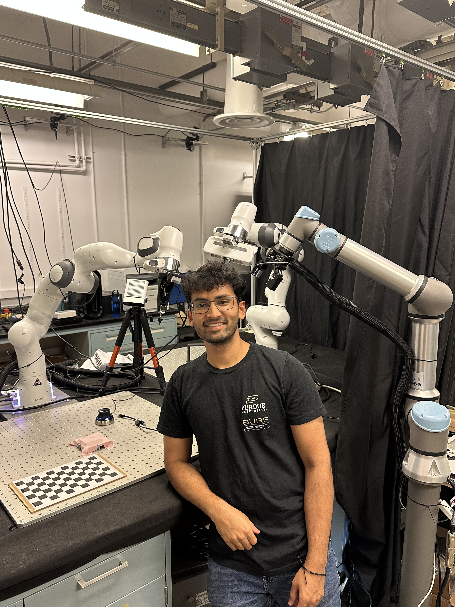

About me
I am a final-year undergraduate computer engineering student at
Purdue researching robotic manipulation at Purdue MARS under Yu She.
Fascinated by fine motor control in humans, I am interested in:
- leveraging multimodal data (tactile, vision, audio) for end-to-end
robotic control
- integrating optimal control with neural networks
- completing contact-rich tasks with tactile feedback
Timeline
- June. 2023 - current: More cool robotics research at Purdue MARS.
Stay tuned for preprints! :)
- May. 2023: Led the Purdue Lunabotics team to a 3rd place finish for
autonomy (highest award in 12 years of club history!) at CAT
RMC 2023 (code,summary)
- March. 2023: Developed hardware and software for proprioception of a
vine robot
- Jan. 2023: Led a robotic leaf following project in collaboration
with Purdue ABE lab
- Sept. 2022: Interned at Tesla on the Steering team and built a
fully-automated hardware-in-the-loop CAN regression tester targeting all
vehicles with EPAS
- June. 2022: Under the Purdue
SURF Fellowship, developed a vision-based heuristic baseline policy
for dual-arm cable grasping and insertion using hybrid force-position
control
- Jan. 2022: Built a rope manipulation policy using Causal InfoGAN and
MuJoCo for my CS 593 course project advised by Prof. Qureshi (slides)
- Sept. 2021: Joined Purdue
MARS under Prof. Yu She to work on perception for a robot bandaging
project by learning dense visual descriptors for 2D deformable objects
(bandage cloth) using contrastive learning (pdf,
slides)
- Jan. 2021: Joined Purdue
CRL as a research assistant and developed a goal
classifier for a Learning-from-Demonstration project using RL
- Dec. 2020: Built a robot arm to stack boxes